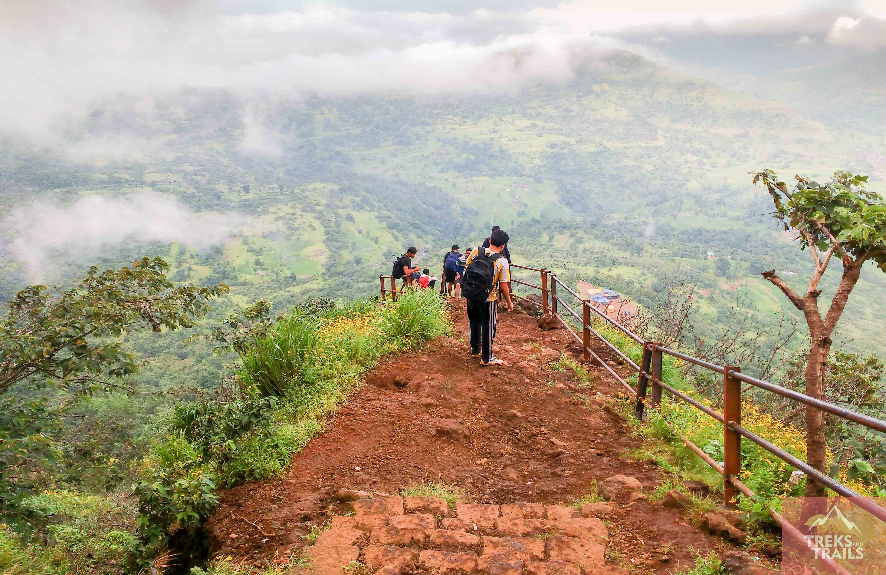
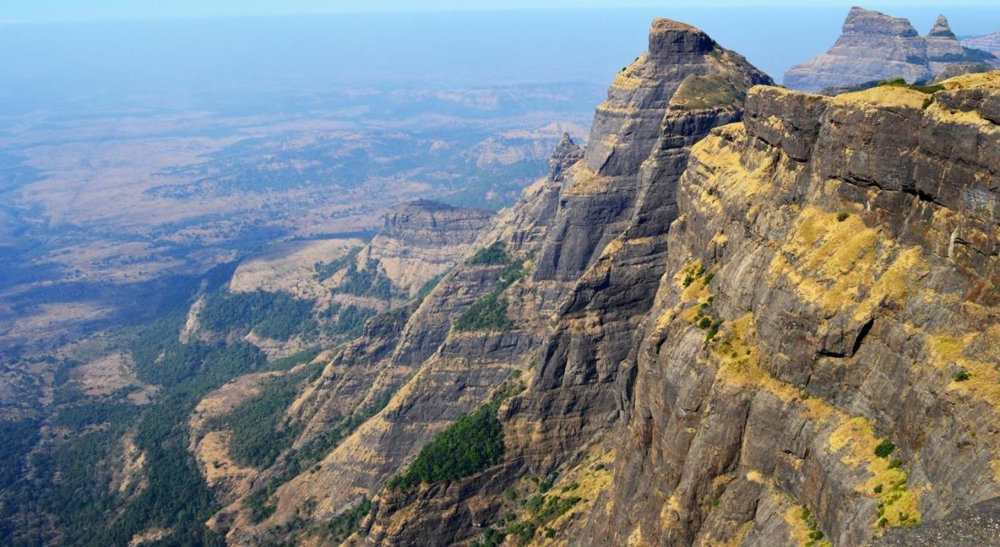
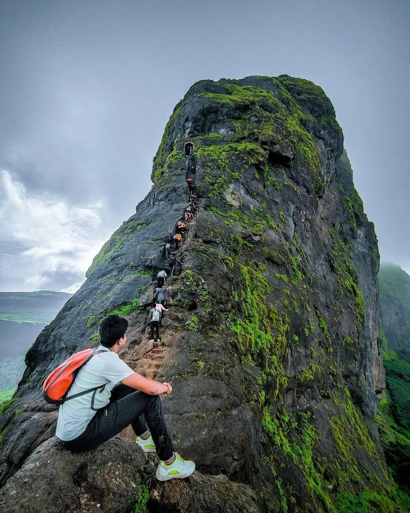

Kalsubai Trek
Gear up for adventure to the highest peak in Maharashtra
-pickup available from Mumbai and pune
-2 day breakfast and lunch will be provided
-travelling with private A/C bus
-Treks availabe in July and August
2D/1N
Rs.1299

Harishchandragad
Hike through one of the most popular treks of the Western Ghats in Maharashtra
-pickup available from Mumbai and pune
-2 day breakfast and lunch will be provided
-travelling with private A/C bus
2D/1N
Rs.1099

HariharFort
Climb the steep steps that are over 80 degrees vertically inclined for an adventurous ascent
-pickup available from Mumbai and pune
-2 day breakfast and lunch will be provided
-travelling with private A/C bus
-Treks available from July and August.
2D/1N
Rs.1499
Sinhagad
Explore one of the most historical places in Maharashtra
-pickup available from Mumbai and pune
-2 day breakfast and lunch will be provided
-travelling with private A/C bus
-Treks availabe in July and August
1D/1N
Rs.999